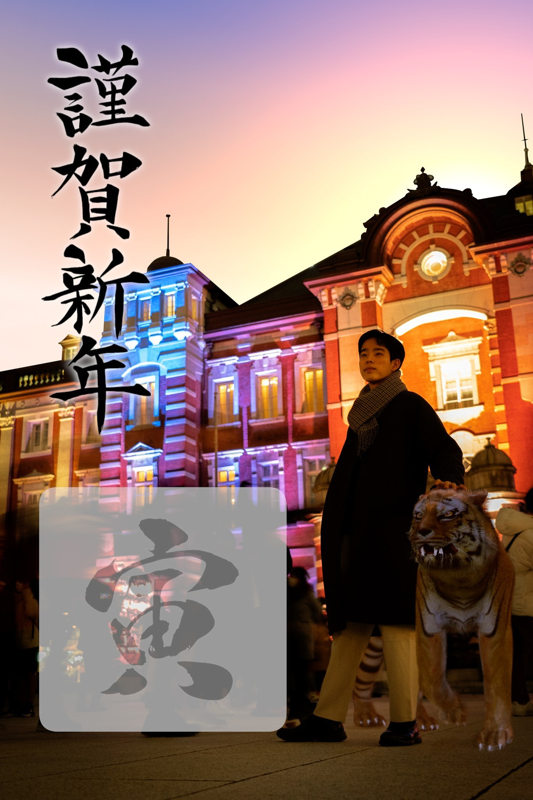
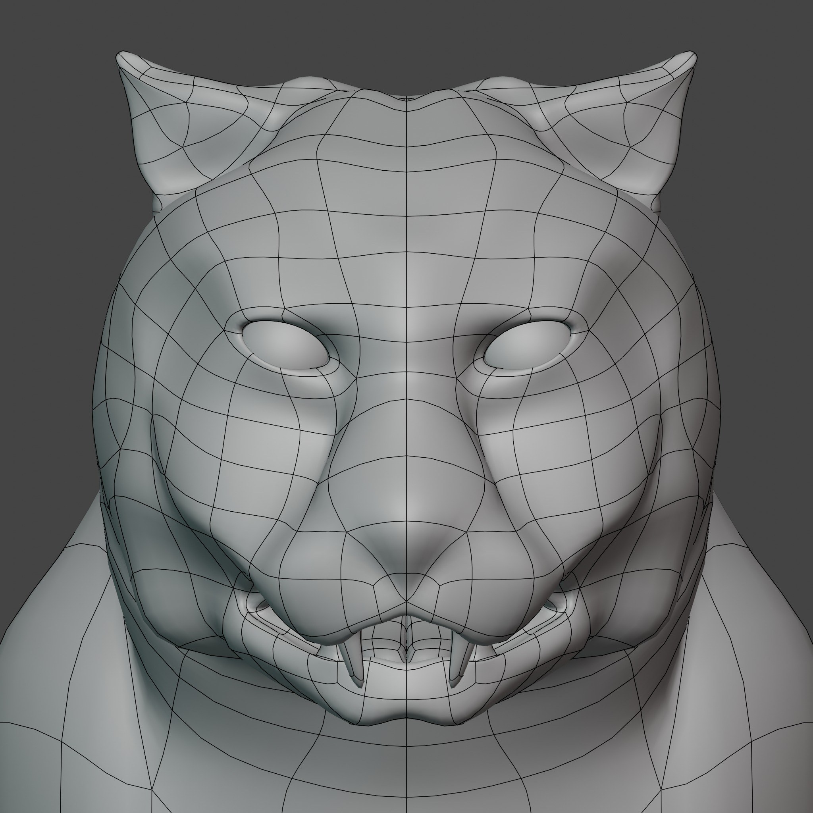
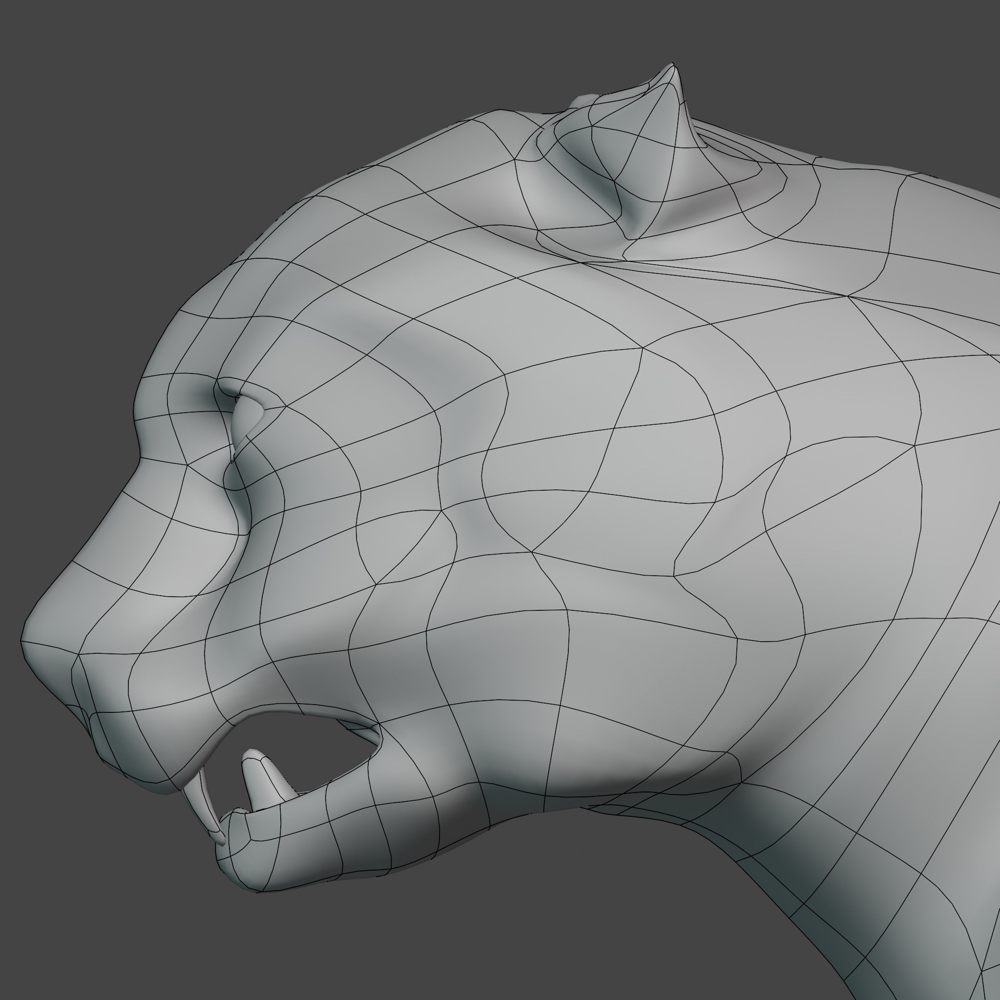
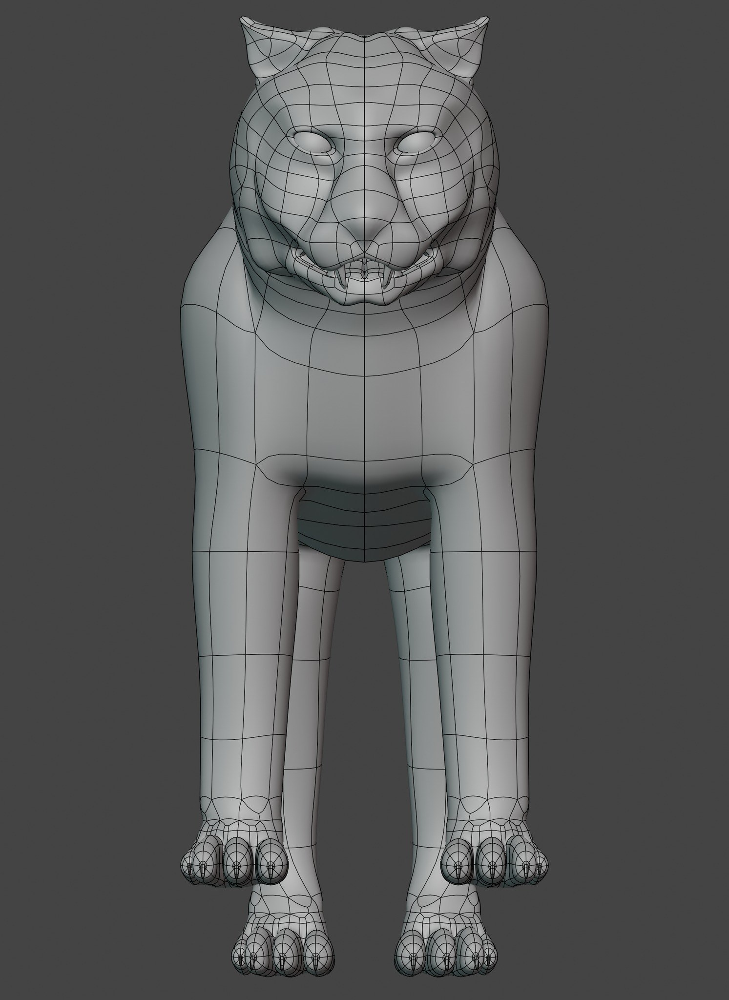
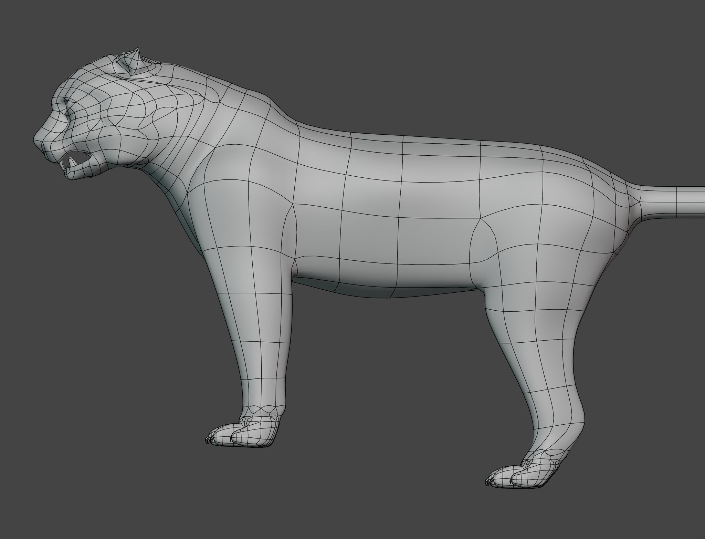

NEW YEAR CARD — 寅年・実写×CG合成 / 2022
2022年 寅年年賀状
自作の3DCG虎と実写を合成した年賀状 ／ 5年がかりのCMの原点
2022年の寅年にあわせて、Blenderで制作した虎と実写を合成した年賀状です。2021年11月15日から12月31日まで、年内ぎりぎりの1か月半で、初めての動物モデリングに挑みました。東京駅の夜景の前に、私と虎のツーショット。この虎がのちに5年かけて育ち、MonsterEnergy自主制作CM「Wake Up」の主役になります。
THE CARD
実写の夜景にCGの虎を立たせる
実写で撮影した東京駅の夜景プレートに、Blenderの虎をライティングを合わせて合成しました。縦位置1枚で完結する、年賀状というフォーマットのための画づくりです。

THE FIRST TIGER — 2021
初代の虎。ここから5年が始まる
年賀状に立っているのが、この初代モデルです。2024年、このトポロジーとUVを一切変えないまま顔の頂点位置だけを整形して、CMの虎へ進化しました。整形のbefore/after比較はCMページの虎セクションにあります。




拡大中は ←→＝正面・側面、↑↓＝顔・全身の切替。
SPEC
- 公開
- 2022年1月1日
- 形式
- 年賀状（実写×CG合成・縦位置1枚）
- 担当
- 虎のモデリング・テクスチャ・リグ、実写撮影、合成（個人制作）
- 制作期間
- 2021年11月15日〜12月31日（虎モデル）
- ツール
- Blender